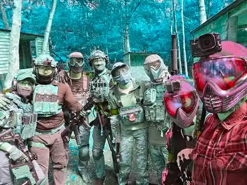

Daftar Isi
Cara memilih airsoft gun untuk pemula dimulai dari menentukan jenis permainan yang diikuti, memilih sistem penggerak sesuai anggaran, lalu melengkapi unit dengan aksesori pelindung wajib sebelum bermain di lapangan skirmish.
- Tentukan jenis permainan terlebih dahulu, apakah war game outdoor, latihan target, atau simulasi indoor jarak dekat.
- Pilih sistem penggerak sesuai anggaran dan kebutuhan perawatan, antara pegas, gas, atau elektrik AEG.
- Perhatikan batas FPS unit agar sesuai regulasi keselamatan lapangan yang akan dikunjungi.
- Lengkapi unit dengan aksesori wajib seperti pelindung wajah, magasin cadangan, dan baterai jika memilih sistem AEG.
- Uji coba unit di lapangan resmi sebelum memutuskan membeli aksesori tambahan dalam jumlah besar.
Bagaimana Langkah Pertama Menentukan Jenis Airsoft Gun yang Dibutuhkan?
Langkah pertama memilih airsoft gun adalah menentukan jenis permainan yang akan diikuti, karena setiap jenis permainan memiliki kebutuhan jarak efektif dan mode tembak yang berbeda.
Pemain yang berencana mengikuti war game outdoor berskala besar dengan jarak tembak menengah hingga jauh umumnya lebih cocok memilih senapan serbu AEG dengan mode full-auto. Pemain yang tertarik pada peran penembak jitu (sniper) dalam skenario taktis lebih cocok memilih senapan runduk sistem pegas dengan akurasi tinggi untuk tembakan tunggal jarak jauh. Sementara itu, pemain yang lebih sering bermain di arena indoor jarak dekat cenderung lebih nyaman menggunakan pistol airsoft atau senapan serbu ringan dengan laras pendek agar mudah bermanuver di ruang sempit.

Memilih alat yang tepat akan memaksimalkan efektivitas permainan.

Liburan Seru Bareng Circle Kamu!
Ingin menjajal serunya paintball atau kegiatan simulasi taktis lainnya? Kami siap menyambut Anda dengan fasilitas terlengkap.
Chat Admin SekarangBagaimana Cara Memilih Sistem Penggerak yang Sesuai Anggaran?
Sistem pegas cocok untuk anggaran terbatas dengan kebutuhan perawatan sederhana, sistem gas cocok untuk pemain yang mengutamakan realisme sensasi tembakan, dan sistem elektrik AEG cocok untuk pemain yang membutuhkan kecepatan tembak tinggi secara konsisten.
Pemain dengan anggaran terbatas namun tetap menginginkan performa yang layak untuk sesi war game reguler dapat mempertimbangkan unit AEG kelas pemula, karena sistem ini menawarkan keseimbangan antara harga, performa, dan kemudahan perawatan dibandingkan sistem gas yang lebih dipengaruhi kondisi cuaca. Pemain yang mengutamakan sensasi realistis seperti hentakan blowback dapat mempertimbangkan sistem gas, dengan catatan perlu memperhitungkan biaya pengisian ulang gas secara berkala. Penjelasan lebih rinci mengenai mekanisme setiap sistem tersedia pada artikel cara kerja airsoft gun dibanding paintball marker.
Apa Saja yang Perlu Diperhatikan pada Batas FPS Sebelum Membeli?
Batas FPS atau kecepatan tembak unit airsoft gun perlu diperhatikan agar sesuai dengan regulasi keselamatan lapangan yang akan sering dikunjungi, karena setiap lapangan skirmish umumnya menetapkan batas maksimum FPS yang berbeda tergantung jarak permainan.
Lapangan indoor jarak dekat umumnya menetapkan batas FPS yang lebih rendah dibandingkan lapangan outdoor jarak jauh, mengingat risiko cedera meningkat pada jarak tembak yang lebih dekat. Berdasarkan standar keamanan lapangan olahraga taktis yang berlaku luas, unit dengan kecepatan tembak pada kisaran 350 hingga 400 FPS umumnya masih diterima di sebagian besar lapangan skirmish outdoor untuk senapan serbu non-otomatis, dengan aturan jarak minimum tembak dari jarak dekat yang lebih ketat. Calon pembeli sebaiknya menanyakan langsung batas FPS yang berlaku di lapangan tujuan sebelum membeli unit agar tidak mengalami kendala saat hari bermain tiba.
Aksesori Apa Saja yang Wajib Dimiliki Pemain Airsoft Pemula?
Aksesori wajib bagi pemain airsoft pemula meliputi pelindung wajah dan mata, magasin cadangan, serta perlengkapan penyimpanan BB agar sesi bermain berjalan lancar tanpa kendala teknis di lapangan.
Pelindung mata standar ANSI atau goggle tertutup penuh menjadi aksesori paling wajib yang tidak bisa ditawar, mengingat risiko cedera mata merupakan risiko paling serius dalam olahraga ini. Pemain yang menggunakan sistem AEG juga memerlukan baterai cadangan dan charger yang sesuai spesifikasi motor, sementara pemain sistem gas memerlukan pasokan gas hijau atau CO2 yang cukup untuk durasi bermain yang direncanakan. Magasin cadangan dengan kapasitas tambahan sangat disarankan agar pemain tidak perlu sering menghentikan permainan hanya untuk mengisi ulang BB ke dalam magasin utama.
Bagaimana Cara Menguji Unit Airsoft Gun Sebelum Membeli?
Cara terbaik menguji unit airsoft gun sebelum membeli adalah dengan mencoba unit sewaan di lapangan skirmish resmi terlebih dahulu, sehingga calon pembeli dapat merasakan langsung karakteristik tembakan dan kenyamanan pegangan sebelum memutuskan membeli unit pribadi.
Banyak lapangan skirmish menyediakan layanan sewa unit lengkap dengan perlindungan wajah bagi pemain baru, sehingga calon pembeli dapat mencoba beberapa jenis sistem penggerak sekaligus dalam satu kunjungan. Pengalaman uji coba langsung ini membantu calon pembeli menentukan preferensi pribadi terhadap bobot unit, sensasi tembakan, dan tingkat kenyamanan pegangan sebelum mengeluarkan anggaran untuk unit pribadi beserta aksesori pendukungnya.